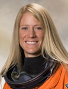

Lyndon B. Johnson Space Center
Houston, Texas 77058
|
National Aeronautics and Space Administration Lyndon B. Johnson Space Center Houston, Texas 77058 |
 |
Biographical Data |
||
Karen L. Nyberg (Ph.D.)
NASA Astronaut
PERSONAL DATA: Born on October 7, 1969. Her hometown is Vining, Minnesota. Married. One child. Recreational interests include running, sewing, drawing and painting, backpacking, piano, and spending time with her family. Dr. Nyberg’s parents, Kenneth and Phyllis Nyberg, still reside in Vining.
EDUCATION: Graduated from Henning Public High School, Henning, Minnesota, 1988. Bachelor of Science in Mechanical Engineering, Summa Cum Laude, University of North Dakota, 1994. Master of Science in Mechanical Engineering, University of Texas at Austin, 1996. Doctorate in Mechanical Engineering, University of Texas at Austin, 1998.
SPECIAL HONORS/AWARDS: University of North Dakota Sioux Award (2009); University of Texas Outstanding Young Engineering Graduate Award (2009); University of Texas Outstanding Young Mechanical Engineer Award (2008); University of North Dakota Young Alumni Achievement Award (2004); Space Act Award (1993); NASA JSC Patent Application Award (1993); NASA Tech Briefs Award (1993); NASA JSC Cooperative Education Special Achievement Award (1994); Joyce Medalen Society of Women Engineers Award (1993-94); D.J. Robertson Award of Academic Achievement (1992); University of North Dakota School of Engineering and Mines Meritorious Service Award (1991-1992). Recipient of numerous scholarships and other awards.
EXPERIENCE: Graduate research was completed at The University of Texas at Austin BioHeat Transfer Laboratory where she investigated human thermoregulation and experimental metabolic testing and control, specifically related to the control of thermal neutrality in space suits.
NASA EXPERIENCE: Co-op at Johnson Space Center from 1991-1995, working in a variety of areas. She received a patent for work done in 1991 on Robot Friendly Probe and Socket Assembly. In 1998, on completing her doctorate, she accepted a position with the Crew and Thermal Systems Division, working as an Environmental Control Systems Engineer.
Selected as a mission specialist by NASA in July 2000, Dr. Nyberg reported for training in August 2000. Following the completion of two years of training and evaluation, she was assigned technical duties in the Astronaut Office Station Operations branch where she served as Crew Support astronaut for the Expedition 6 crew during their six-month mission aboard the International Space Station. Dr. Nyberg has since served in the Space Shuttle branch, the Exploration branch, and as Chief of the Robotics branch. A veteran of two spaceflights, Dr. Nyberg served as a Mission Specialist on STS-124 and a Flight Engineer for Expedition 36/37. She has accumulated 180 days in space over the course of the two missions.
SPACE FLIGHT EXPERIENCE: STS-124 Discovery (May 31 to June 14, 2008) was the 123rd space shuttle flight, and the 26th shuttle flight to the International Space Station. STS-124 was launched from the Kennedy Space Center, Florida, and docked with the space station on June 2 to deliver the Japanese Experiment Module-Pressurized Module (JEM-PM) and the Japanese Remote Manipulator System. STS-124 shuttle astronauts delivered the 37-foot (11-meter) Kibo lab, added its rooftop storage room and conducted three spacewalks to maintain the station and to prime the new Japanese module's robotic arm for work during nine days docked at the orbiting laboratory. STS-124 also delivered a new station crew member, Expedition 17 Flight Engineer Greg Chamitoff. He replaced Expedition 16 Flight Engineer Garrett Riesman, who returned to Earth with the STS-124 crew. The STS-124 mission was completed in 218 orbits, traveling 5,735.643 miles in 13 days, 18 hours, 13 minutes and 7 seconds.
Expedition 36/37 (May 28 to November 10, 2013). Dr. Nyberg, Russian cosmonaut Fyodor Yurchikhin and European Space Agency (ESA) astronaut Luca Parmitano launched aboard the Soyuz TMA-09M from the Baikonur Cosmodrome in Kazakhstan to the International Space Station. They were welcomed aboard by Expedition 35 Commander Pavel Vinogradov and Flight Engineers Alexander Misurkin and Chris Cassidy. During the expedition, the crew completed 166 days aboard the station and 2,656 orbits of the Earth while travelling more than 70 million miles.
NOVEMBER 2013